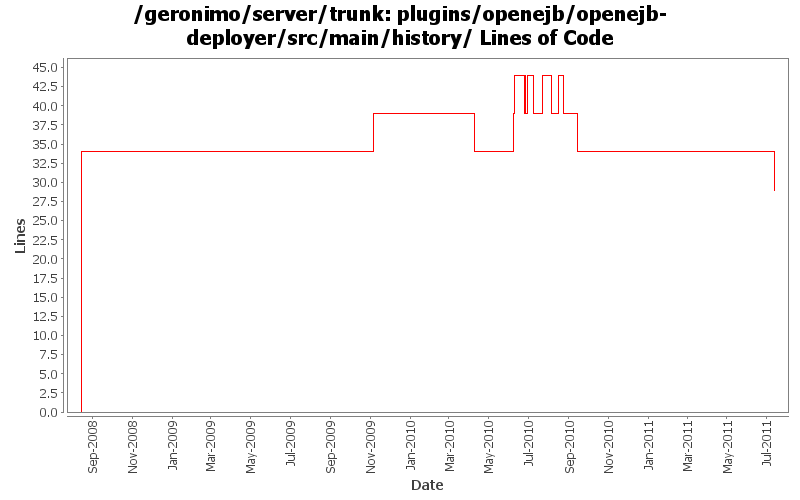

[root]/plugins/openejb/openejb-deployer/src/main/history

| Author | Changes | Lines of Code | Lines per Change |
|---|---|---|---|
| Totals | 19 (100.0%) | 82 (100.0%) | 4.3 |
| djencks | 7 (36.8%) | 49 (59.8%) | 7.0 |
| rickmcguire | 6 (31.6%) | 31 (37.8%) | 5.1 |
| dwoods | 2 (10.5%) | 2 (2.4%) | 1.0 |
| linsun | 1 (5.3%) | 0 (0.0%) | 0.0 |
| genspring | 1 (5.3%) | 0 (0.0%) | 0.0 |
| gawor | 1 (5.3%) | 0 (0.0%) | 0.0 |
| dblevins | 1 (5.3%) | 0 (0.0%) | 0.0 |
some dependencies.xml changes after building openjb plugins.
0 lines of code changed in 1 file:
Updates corresponding to OPENEJB-1354: Internal CoreDeploymentInfo class renamed to BeanContext
0 lines of code changed in 1 file:
remove unnecessary webservices-builder and webservices-common dependencies off openejb
0 lines of code changed in 1 file:
fix build break
5 lines of code changed in 1 file:
GERONIMO-5066 Fix a lot of problems with jndi including wrong finders and inconsistent adding of injections
0 lines of code changed in 1 file:
upgrade to new bundle versions, switch to the 3.1.0-SNAPSHOT version of Felix
5 lines of code changed in 1 file:
GERONIMO-5438 don't use the method dblevins wants to take out of openejb
0 lines of code changed in 1 file:
Dependency updates
5 lines of code changed in 1 file:
cf openejb rev 958340. marshal persistence.xml in the correct namespace, marshal methods names changed
0 lines of code changed in 1 file:
upgrade dependencies to newer verions
5 lines of code changed in 1 file:
GERONIMO-5190 use openejb-jee jaxb tree for spec dds
0 lines of code changed in 1 file:
copy legal files from 3.0-M1 release as a base and backport mini-server pom changes
5 lines of code changed in 1 file:
See openejb rev 952538 use the osgi finder factory
5 lines of code changed in 1 file:
ejb spec needs jaxrpc and jaxrpc needs servlet
0 lines of code changed in 1 file:
more bundle dependency cleanup
6 lines of code changed in 1 file:
more required updates due to renaming of the connector and transaction artifacts to include -1_6 in r805984
1 lines of code changed in 1 file:
update other XML files with embedded versions from 2.2-SNAPSHOT to 3.0-SNAPSHOT
1 lines of code changed in 1 file:
GERONIMO-4692 sort dependencies.xml, except for connector-1_6
10 lines of code changed in 1 file:
GERONIMO-4248 Add dependency history files
34 lines of code changed in 1 file: